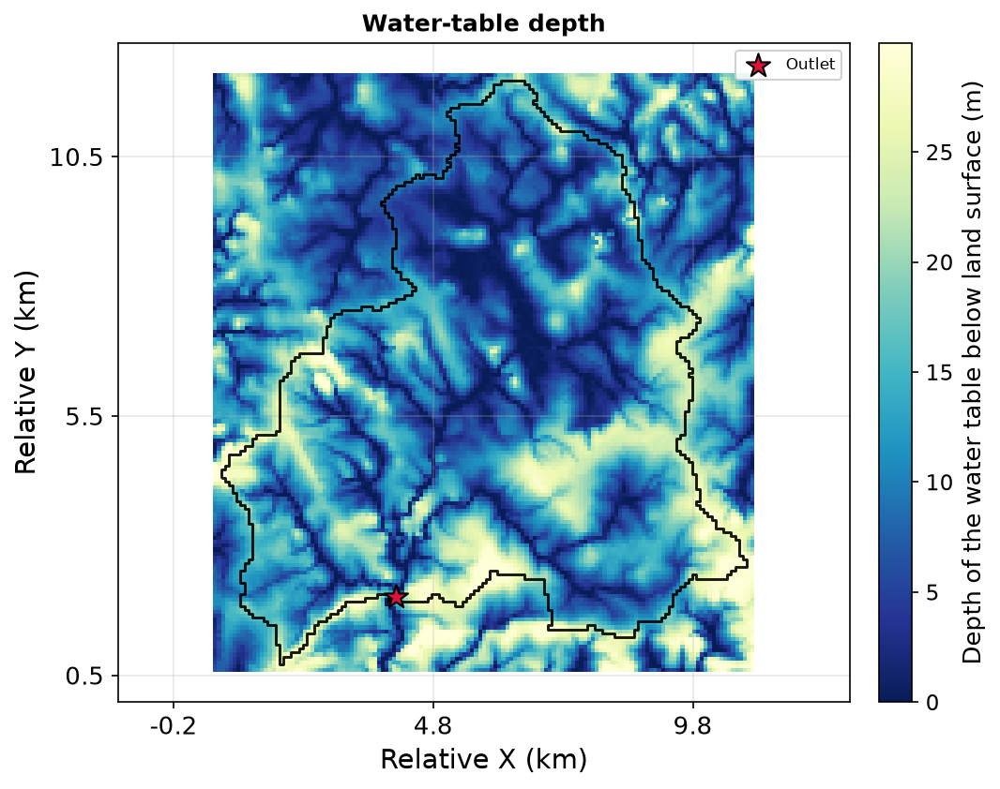
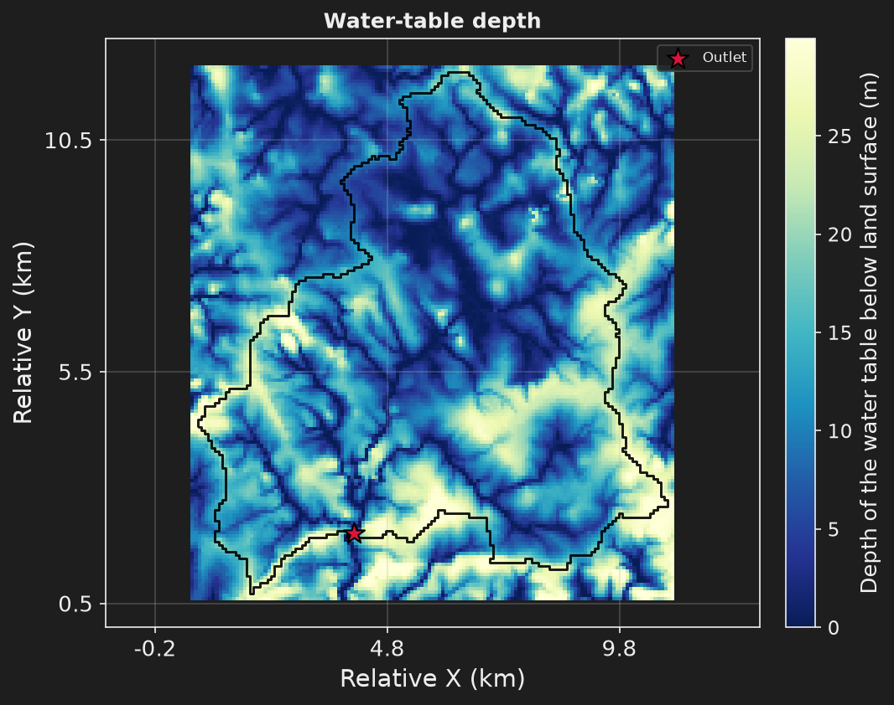

Step 1: the shortest file that runs#
- Task
Solve the Nançon catchment in steady state from one short file.
- Time
15 to 25 s for the run (the
Run completedfigure), 25 to 45 s for the command.- Needs
The example files (The staircase) and the MODFLOW 6 binary, downloaded on first use. No other network access.
- Gives
Five figures and four files: the catchment outline, two GeoTIFFs and a water budget.
Step 1 cuts the catchment out of a regional DEM upslope of an outlet point, gives the aquifer one K and one recharge rate, and lets any cell drain at the ground surface: the excess water leaves as seepage. It inherits nothing, so this page shows the whole file. The aquifer is 30 m thick instead of the 50 m default.




The file#
step1_minimal.toml · the base of the staircase · keys link to their card1# Step 1: the shortest file that runs. Nancon, steady state on the local DEM, 2# one K, one recharge rate, seepage at the ground surface. 21406 cells of 75 m. 3# 4# hmp run step1_minimal.toml 5 6[workflow] 7mode = "simulation" 8# verbosity = "quiet" | "normal" (default) | "verbose" | "debug". 9# `hmp run -q | -v | --debug` wins over the key. 10 11[workspace] 12project_root = "." 13 14[simulation] 15name = "nancon_step1_minimal" 16 17[[simulation.process]] 18id = "flow_main" 19type = "flow" 20solvers = ["modflow6"] 21 22[geographic] 23# Places the delineated watershed on the mesh. 24crs_project = "EPSG:2154" 25 26# The catchment is cut out of a regional DEM, upslope of the outlet point. 27# buff_area widens the model domain by 10 % of the catchment area. 28[geographic.catchment] 29catch_def = "from_outlet_coord" 30dem_init_path = "DEM_armorican_massif.tif" 31x_outlet = 389285.910 32y_outlet = 6816518.749 33snap_dist = "150 m" 34buff_area = "10%" 35 36# 30 m of regolith and fissured bedrock, against the 50 m default. 37[domain.depth_model] 38kind = "constant_thickness" 39thickness = "30.0 m" 40 41[flow] 42# The default is transient; step 4 brings the time window and the forcing. 43flow_regime = "steady" 44param_list = ["K", "Sy"] 45active_sinks_sources = ["recharge"] 46# Any cell drains at the ground surface: the excess leaves as seepage. 47active_bc = ["drainage"] 48 49[flow.param.K.field] 50kind = "homogeneous" 51unit = "m/s" 52value = 5e-5 53 54# A steady solve never reads Sy; it is declared once here for step 4. 55[flow.param.Sy.field] 56kind = "homogeneous" 57unit = "-" 58value = 0.05 59 60# mm/d, the 2000-2002 mean of the observed recharge. 61[flow.sinks_sources.recharge] 62values = 0.78 63 64# The catchment, the depth to the water table and where it reaches the 65# surface, a section through the outlet, and what enters and leaves. 66[display] 67on_error = "raise" 68figures = [ 69 "watershed_id_card", 70 "watertable_depth_map", 71 "seepage_map", 72 "cross_section", 73 "water_budget", 74] 75 76# South to north through the outlet, so the section cuts the tributaries 77# across. The west-east default crosses the valley once, at the southern edge. 78[display.overrides.cross_section] 79orientation = "sn" 80 81# What the run writes to share/nancon_step1_minimal/. A block says what 82# (variables) and when (time); the format follows the data. The next steps 83# inherit these three blocks. 84 85# The catchment outline: GeoPackage. 86[[export]] 87variables = "watershed" 88 89# The water table and the seepage cells: one GeoTIFF each. "last" is the one 90# state of a steady run, and the last month of a transient one. 91[[export]] 92variables = ["watertable_depth", "seepage_mask"] 93time = "last" 94 95# The water budget: CSV. 96[[export]] 97variables = "budget"
Run it#
cd ~/hydromodpy/projects/04_streamflow_intermittence_in_transient
hmp run step1_minimal.toml
hmp run -v prints every INFO line and hmp run -q only warnings and errors.
import hydromodpy as hmp
run = hmp.run("step1_minimal.toml")
print(run.name)
If you have not fetched the example yet, start with The staircase. Running the file again does nothing, unless you edited it: see the rerun note.
What you get#
Five figures, in runs/nancon_step1_minimal/figures/, listed by display.figures:
Figure |
What it shows |
|---|---|
|
The topography, the outlet, and a table of facts: what was modelled, where, over which period, on which grid |
|
The depth of the water table below the land surface, in metres |
|
The cells where the water table reaches the surface, a yes or no for each cell |
|
The land surface, the water table and the seepage segments along a line. Here the line runs south to north through the outlet, so it cuts the tributaries across |
|
One bar per component of the budget, inflow and outflow |
Three [[export]] blocks write four files, in share/nancon_step1_minimal/:
Block |
Files |
|---|---|
|
|
|
|
|
|
The run also leaves a RUN.txt there, which is a note and not an export. Steps 2 to 4
inherit these three blocks.
The warnings of the first run#
The run prints WARNING lines. None is an error, and each has a reason.
Warning |
Why |
What to do |
|---|---|---|
|
The coordinate of the file does not fall on a stream cell of the DEM. The delineation starts from the nearest cell of the flow network, within |
Nothing, here. A move close to the limit means the coordinate is far from the stream: check it. |
|
The discharge of steps 1 and 2 is what the drains collect from the aquifer. A gauge measures that plus the surface runoff, and no runoff series is loaded. |
Nothing, until step 4: it loads a runoff series, adds it to the discharge, and the warning goes. |
|
A run is sealed with a record of who made it and under which licence, and the workspace says neither. It prints once per workspace, on its first run: if you ran the demo of the quick start, you saw it there. |
Cosmetic. Write the two keys under |
Key fields#
Sy is declared too, for step 4: a steady solve never reads it.
Next: Step 2: the mapped network and the gauge, which adds the mapped stream network.